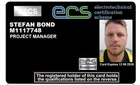

Validate your construction and electrical project management expertise with an industry-recognised ECS Project Manager Card for UK construction sites.

Official-style ECS Project Manager Card – recognised proof of construction project management competence across UK sites.
The ECS Project Manager Card is designed for professionals who lead construction and electrical contracting projects on UK sites. Holding this ECS management card shows that you can plan and deliver projects safely, manage multiple trades and contractors, and meet UK health and safety requirements.
Whether you oversee commercial builds, fit-outs, infrastructure work or large electrical installations, the ECS Project Manager Card helps clients, principal contractors and duty-holders see that you have the right mix of qualifications, experience and safety knowledge to manage projects from start to finish.
Standard application processing: 15–20 working days
To be eligible for the ECS Project Manager Card, you should already be responsible for leading construction or electrical projects in the UK and be able to demonstrate the right qualifications, experience and health and safety knowledge.
When you apply online for your ECS Project Manager Card, you will usually be asked to provide the documents below so your application can be assessed quickly.
Acceptable qualifications for the ECS Project Manager Card can include degrees and diplomas in Construction Management, Project Management, Civil Engineering, Building Services or related disciplines. Professional project management certifications such as PRINCE2, APM or CIOB membership may also support your application when combined with proven UK site experience.
If you hold international qualifications, you may be asked for evidence of equivalence to UK standards, alongside details of your project management work on UK construction sites.
Recognised across the UK construction industry and by electrical contractors as proof of project management competence.
Shows clients and principal contractors that you understand UK health and safety and ECS scheme requirements.
Supports progression into senior project manager, contracts manager or operations management roles.
Strengthens your CV and tender submissions when bidding for new work or applying for senior positions.
The ECS Project Manager Card normally accepts qualifications in construction management, project management, civil engineering or similar subjects, plus recognised health and safety training. Professional certifications such as PRINCE2, APM or CIOB membership can also help, but you must still show real project management responsibility on UK sites.
Trade ECS cards focus on individual crafts such as electricians or installers. The ECS Project Manager Card is for people who manage entire construction projects – setting programmes, managing budgets, coordinating trades and leading on health and safety and compliance across the whole site.
The ECS Project Manager Card is valid for three years. When it expires, you will usually need a new ECS Health, Safety & Environmental test pass and updated evidence of project management work before a renewal card can be issued.
Yes, you can often apply with international qualifications, provided they can be shown to be equivalent to UK standards. You may be asked to supply comparison evidence and you must still show that you have managed construction projects under UK regulations and health and safety rules.